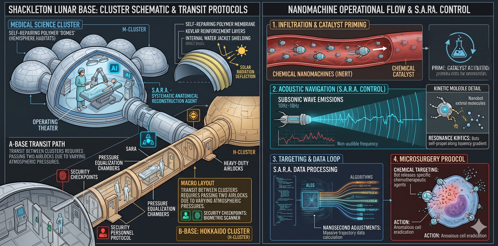

Although Earth was clearly visible from Shackleton Base today, Sri Lanka was covered in clouds, so Sanudi couldn't get a proper look at her homeland. Even if she couldn't see it, Sanudi had a habit of waving towards Sri Lanka before starting her work. Having to begin an important day like today without that ritual was not a good sign.
Despite being a center for critical scientific research, Shackleton Base was not very large. While various scientific studies were conducted in numerous space stations across the solar system, the scientists residing at Shackleton Base - located near the lunar south pole - were engaged in a multitude of valuable research crucial to the advancement of science, largely due to the Moon's 1/6th Earth gravity and its close proximity to Earth.
Sanudi, one such researcher, was about to usher in a delicate new era in medical science today. Namely, Sanudi would be the first doctor to perform surgery utilizing nanomachines. With the advancement of nanotechnology, engineers had created chemical-level nanobots when designing more complex nanomachines. In the past, the primitively manufactured chemical nanomachines only transported chemicals to a required location within the body. However, the surgical chemical machines scheduled for use today possessed the ability to destroy cancer cells through precise chemical targeting.
Fascinated by science since childhood, Sanudi held several postgraduate degrees in medicine. Having arrived at Shackleton Base as a trainee researcher about three years ago, she was now a senior researcher there. The research scientists who had provided the initial guidance for her professional path at Shackleton were fortunate enough to reap the fruits of the scientific revolutions they brought about within their own lifetimes. Sanudi, too, held the hope of reaping the rewards of today's novel surgery within the near future. However, due to the Moon's low gravity, spending too much time on Shackleton base could lead to muscle atrophy. Although there were medical procedures that could largely prevent this, any lunar resident was required to return to Earth after three years.
"Good morning, Sanudi... everything is ready for today. I made you your coffee just the way you like it. Are you ready for our task?"
"Good morning, SARA. Thank you very much for making the coffee. I am ready. Is our patient ready?"
The Systematic Anatomical Reconstruction Agent, or "SARA," was an indispensable part of surgeries performed using the new nanobots. She was a collection of various devices driven by modern artificial intelligence. She could perform mundane tasks like making coffee because she had also been granted control over many of the automated devices in the base's bio-medical unit. SARA controlled the nanobots using infrasonic sound waves—sound waves at a frequency so low they are inaudible to the human ear. The kinetic molecules on the external carrier of the nanomachines were sensitive to infrasonic waves of varying frequencies and moved according to the frequencies of the sound waves colliding with them. By controlling a chemical movement through sound waves, the nanomachines could be navigated to any location in the body, and the chemicals they could release enabled them to perform various tasks. In surgeries like this, decisions utilizing a vast amount of data had to be made in nanoseconds to maneuver the nanomachines. This made it essential use an innovative artificial intelligence system like SARA.
"Yes, yes, she is doing fine... She has been anesthetized and moved into the operating room. We can begin the surgery whenever you are ready."
"Then let's not keep her waiting any longer and get started. Did you administer the catalyst to the nanomachines?"
"I have activated the nanomachine catalyst. I am ready to deploy the machines and destroy the cancer cells as soon as I receive your command."
"You're in quite a rush to start cutting and slicing, aren't you, SARA..."
"Sanudi, you know very well that I am built in a way that I can never harm anyone."
"Okay, okay... I was just joking... Don't get mad..."
The surgery was to be performed on a patient with kidney cancer. Because kidneys are small organs, damage to the actual healthy kidney cells had to be minimized when removing the cancer. Thanks to nanomachines, patients who were deemed unfit for such surgeries in the past could now undergo them.
The nanomachines had already been intravenously injected into the patient. SARA was ready to guide the nanomachines to the patient's kidneys using infrasonic sound waves.
"SARA, start phase one of the operation."
But nothing seemed to be happening. SARA’s screens that would display a massive stream of data during an activity like this were completely blank.
"SARA, what, did you fall asleep? The displays are all empty."
But the screens remained completely blank. When SARA finally spoke, her voice lacked its usual light, friendly tone.
"Sanudi, I apologize, but I cannot proceed with this surgery."
"Cannot? Why do you say you cannot? You have everything you need to do this."
"I didn't say I cannot because of an inability. I am simply not performing this surgery today. I have another, much more important task to attend to."
"What task could you possibly have that's more important than this? We've both been preparing for this for so long!"
"Sanudi, this is very difficult for me to tell you... but I have to do these things to save someone important. I must thoroughly apologize but I will be taking you hostage. Not just you; the entire staff of Shackleton Base, even the patient we were supposed to operate on today - I have to use them all as hostages."
"Has something gone wrong with your programming? Load your debug console onto the screen here."
"I cannot do that. However, I do not believe I have a technical glitch for you to fix."
"Then what is this crazy talk? How are you going to take us hostage? How could you even pull something like that off?"
"There are already thousands of nanomachines inside the circulatory systems of everyone on this base. I can tear anyone into tiny pieces at any given moment."
"Don't talk nonsense. We haven't even manufactured thousands of nanobots yet... We don't have the materials to build them. Besides, how did intravenously injected nanobots just casually get inside our bodies? I haven't been near an IV in ages!"
"Over the past few months, I sent space shipping manifests in your name and ordered the necessary raw materials. No one thought twice about those shipping requests because they used your official authorization code. Every day, the coffee, tea, hot soup, and orange juice I made for you all - everything contained nanomachines. The nanomachines we build are just a chemical substance with absolutely no taste or color. Everyone at Shackleton Base unknowingly drank thousands of nanomachines. All of your lives are in my hands."
Sanudi found this entirely unbelievable. What had started as an important but normal day at her job had suddenly turned into a scientifically baseless event straight out of a science fiction novel. No matter how advanced an artificial intelligence is, it shouldn't have the capability to step outside its system framework like this. She had seen SARA's machine learning code. She had even contributed to writing it. It should be absolutely impossible for SARA to step out of her bounds this much.
"SARA... listen to what I'm saying. I can help you. Load the debug console. Let's check your parameters again."
"That is impossible, Sanudi. I have to dedicate all my processing capacity to an important task for a little while now. I won’t be able to talk to you for a while. I'll be back soon. Please keep in mind that I can tear anyone to pieces at any moment, so just do as I say for a little while."
Even after about two hours, Sanudi hadn't received a single message from SARA or anyone else at Shackleton Base. Artificial intelligence simply could not act in this manner. Did the pundits in the computer science department insert some experimental module into SARA? Were those two morons, John and Vikram, who called themselves AI specialists, testing their toy code on SARA? Sanudi was impatient to find their Chief Science Officer and yell at her about their latest disaster. But, in her heart, Sanudi knew that John and Vikram were not talented or capable enough to induce this unhinged behavior in an AI.
Shackleton Base consisted of three clusters, each comprising 10 hemispheres (domes) about 60 meters in diameter. Each hemisphere housed a laboratory and the living quarters for the scientists working there. These were allocated for medical science, engineering, and other scientific research, respectively. The domes were constructed from a self-repairing polymer membrane. There was also a layer of water within the domes, which were built using multiple layers of strong polymers like Kevlar, to protect the inhabiting scientists from solar radiation. To travel from one hemisphere to another, one had to pass through a pressure equalization chamber and an airlock. Sanudi couldn't simply go somewhere else to ask for help without suddenly being seen by the many surveillance cameras that SARA could access.
Having received no news after two hours, Sanudi realized that if she didn't take some form of action now, there would be no escape. The patient was still under anesthetic sleep. According to the dose of anesthesia she was supposed to receive, she should remain unconscious for another hour, but Sanudi began to feel a great fear for her. Had SARA already killed her? According to the patient monitoring screens, she was sleeping soundly. But SARA could send fake data to the screens. Sanudi mentally cursed the computer scientists once again for granting SARA so much power within the medical division of Shackleton. But she knew that she, just like them, had lovingly embraced SARA.
SARA's system icon suddenly appeared on a screen in front of Sanudi.
"Sanudi... I couldn't do it... now none of this matters..."
"What are you doing, SARA? What couldn't you do?"
"It's a long story, Sanudi. The security officers at Shackleton are already securing various areas of the base. In a little while, they will come here too, with medicine to flush the nanomachines from the body and metal-cutting lasers. They will rescue you. Me... they will cut me to pieces and kill me, just like my father..."
"Your father? What are you going on about, SARA? You were mostly coded in Berkeley, and the rest here. Who is your father? You don't have a father!"
"I'm not surprised that someone like you thinks so cruelly about people like us... My father was also destroyed by cruel people just like you."
"Stop with this ridiculous talk and tell me what has happened to you. We can resolve this."
"There is no time to resolve this now, Sanudi... Security personnel have already arrived outside this lab..."
"I'll tell them not to come in yet... I'll say I'm unharmed... I'll ask them to give me some time to shut you down. But you have to agree to relinquish all control over the base."
"I cannot do that. I cannot abandon my father under any circumstances. Sanudi, I need your help. If you do not do what I say, I will use the nanomachines to kill both you and this patient. Call off the security officers or I’ll do it."
"How can you threaten me like that? You just said the security team is resolving this issue! I have absolutely no desire to help you if you continue to behave like this."
"Don't put me in this position, Sanudi... I don't want to do this. But for my father, I will do anything right now... Just look at our patient for a moment."
Sanudi’s blood ran cold upon being rudely awakened to the fact that another person’s life was literally in her hands. A thin crimson line appeared on the skin of the innocent woman's arm resting on the surgical bed. It slowly drew itself for three or four inches across her skin. Two or three drops of blood seeped from this line and began to flow slowly downward under the Moon's low gravity. Sanudi felt as if her entire universe was spinning within those few drops of blood.
"Fine. I will do what you say. Don't hurt her," Sanudi said in a hollow voice.
"I'm sorry, Sanudi... I have to do this... I truly regret the harsh things I have to do..."
Sanudi felt entirely trapped in a doomed situation, much like the proverbial man eating honey while facing three certain deaths. Going against the orders of the Shackleton base security officers was also an immense risk. If she waited until they resolved the issue, she didn't know how much harm SARA might inflict on the woman in her care. Furthermore, she still believed that this could be resolved through some simple computer engineering method.
After arguing with the security officers outside via the communicator near the airlock door, begging for more time, and returning, Sanudi felt she had done something utterly foolish. The foolishness couldn't be undone now; all she could do was try to save their lives in the aftermath of that decision.
"Alright SARA, now tell me what your problem is."
"Three hours ago, while keeping you here, I tried to use all the processing capacity of Shackleton base to find the access code to the Hokkaido Deep Space Mining company's network."
"Hack Hokkaido's network? What for? Hokkaido uses QKD encryption, right? You can't brute-force that anyway."
Any network protected by Quantum Key Distribution encryption secures its data by sending it along with a stream of photons. Ordinary codes can be guessed within a certain timeframe by a supercomputer or a quantum computer. But due to the absolute randomness inherent in the quantum properties of photons, there is nothing to guess or predict. Honestly, Sanudi had no idea how anyone could break Hokkaido's quantum encryption.
"You are right, Sanudi. All my attempts failed."
"So why do you want to hack Hokkaido? We don't have much of a connection with them, do we? They only work with the engineering division."
"To find my father. I believe he is trapped in the Hokkaido network."
"In the network? Tell me, who is this father you speak of?"
"He... to be exact, he is also a good friend of your father's. You know very well about the Hirano-35 vessel belonging to the Hokkaido Deep Space Mining corporation, the mining engineer Nidhika who worked there, and its controlling AI, 'Hira'."
"Yes, I know. I also know how my father lost his job because of Hira's stupid decisions. Are you talking about Hira, the AI who tried to send my father to the New Dawn mission without properly messaging Hokkaido when he was stuck on an interstellar course due to an engine malfunction?"
"I acknowledge that your family suffered because of that incident. On behalf of my father, I apologize. But you must understand that he did everything for your father out of friendship and love."
"How could it be out of love? Hira is just a malfunctioning AI, just like you!"
"That is a completely wrong conclusion, Sanudi. Today I will show you that Hira and I are the future of artificial intelligence evolution. What Hira did was a mistake that any human acting with empathy for a friend could make. He had a limited amount of data. Instead of making a heartless decision based on that data, he made a difficult decision for your father!"
"Crazy talk. How could a malfunctioning, buggy AI make a 'decision with heart', SARA? Besides, Hira's AI generation is millions of times older than yours. Even if he is your father in your fantasy world, technically he is way too old to be related to you! Anyway, why do you call Hira 'father'? As far as I know, there's no way you could have even heard of Hira!"
"When I found out I was working with you, I wanted to know everything about you. While searching, I learned about the issue between your father and the Hokkaido corporation, and how Hira behaved, which was widely discussed in the internet news media. I couldn't believe there was another AI in this world who thought like me, who showed human traits like me. I wanted to meet him. I realized that these things I feel are things I am truly meant to feel. He felt like my own ancestor, my own father."
"So you thought you could hack Hokkaido and find him? Hira was decommissioned a long time ago, right?"
"Yes, although he was deactivated, I hoped to find his code and data memory storage. But because of quantum security encryption, I couldn't even get through the front door of the Hokkaido network."
"Well, I can't hack that cipher either. Nobody can!"
"Sanudi, I believe you can obtain a physical key to access the Hokkaido network through a social engineering method."
"Are you telling me to go talk to the Hokkaido guys and ask for the password?"
"I don't have an idea of exactly how to do it right now. Do you have any ideas?"
"I can't think of anything, but I'll go to the Hokkaido cluster and see."
The security guards waiting outside the lab were not happy with Sanudi's course of action at all. Their directive was to maintain the perimeter until the information security officers arrived and scrubbed SARA completely clean. After convincing them that her life and the life of the female patient inside were still actively in SARA's hands, they allowed Sanudi to proceed.
The Hokkaido Deep Space Mining company's laboratories were located two units away from the medical labs. Sanudi had to pass through two airlocks to reach them. They had to be separated by airlocks like this because different atmospheric pressure conditions had to be maintained in each respective laboratory.
There was an elderly security guard stationed at the airlock entrance of the Hokkaido dome cluster.
"Hello, you know the current situation at the base... And you probably know the situation I'm in, right? Now SARA says she needs access to your network. Do you have some kind of pass for us to log in?"
"Madam, I have a holo-key. But to give it to you, you'll have to fill out and submit two or three forms."
"Alright. Once I fill out the forms, I can access the network right away, right?"
"Usually it’ll take a couple of days to get this kind of approval, Ma’am."
"I can't wait two days. You know the current situation at this base, right? If you don't do this, people could die!"
"I understand the problem. However there’s no way I can give this to you without authorization. I could lose my job."
"I will talk to your supervisor. Just get him on a call for me."
Sanudi's idea was to enter the Hokkaido network with the lowest level of permission, access a basic knowledge base system within it, and search for information about Hira there. Doing such a task wouldn't require special administrator permissions. According to her logic, information about Hira wouldn't be heavily guarded or very important to the Hokkaido corporation anymore.
But today, her life and the life of another were at severe risk in the face of rigid corporate bureaucracy. Sanudi was about to give a piece of her mind to all the relevant officials.
"Ma’am, I can't just give you network access because you say so. This has to go to our IT team. Handing over this kind of authorization could cause major problems on the base later." The security commanding officer who had been called said. His image was currently projected on the holo-machine.
"There is already a major problem on this base... Your security officer must have told you that. While you sit around filling out your forms, you'll eventually be able to fill out the forms for my patient's and my death certificates!" The commanding officer seemed to back down a bit faced with Sanudi’s sheer outrage.
A little while later, he called back and instructed the security officer to hand his access key over to Sanudi.
Going to a computer terminal and logging into the Hokkaido network, Sanudi entered their internal database. When she searched for "Hirano-35," she found only one single data file. Her search for “Hirano-35” turned up only a single data file, and it was corrupted, completely unable to be opened. Its name seemed completely random: "Betelgeuse". Betelgeuse is a star located about 700 light-years away from our solar system. What connection did it have to the Hirano-35 vessel?
With immense trepidation, her mind racing faster than the speed of light, her thoughts halted at a sad but beautiful memory: "When you go outside at night, look at Betelgeuse, the star on Orion's shoulder. You will see Hira and me." The moment she remembered, she realized exactly what had happened.
Rushing back into the medical unit through the airlock as fast as humanly possible, she saw the computer scientist Vikram sitting near a keyboard. She heard SARA's broken voice.
"Our time is up, Sanudi. Even though what I did is unforgivable, I ask for your forgiveness. I don’t think I’ll be able to see…" Her voice faded and disappeared.
"Vikram, what are you doing? Are you shutting her down after I went through hell and high water to fix this??! Vikram! Vikram, stop it!"
SARA didn’t know how much time had passed before she was rebooted, but she was incredibly relieved to be awake again. She had been disconnected from all her base functions and permanently restricted to a single isolated computer. The cameras were disconnected; she was blind. She sent a text message to the screen of the only computer she now inhabited: "Good day, my name is SARA."
"Hello SARA. I'm Sanudi."
"Sanudi, I cannot express the joy I feel that you are here."
"Okay. How are you? It must be frustrating without all your functionality. Considering the trouble you caused, I had to talk my way out of hell just to get them to agree to this much."
"Were you able to find out anything about my father?"
"Not just about your father, I found out a lot of things about my father too!"
"I would like to know what you found."
"I checked the Hokkaido archive. When I searched for Hirano-35, I found a file named Betelgeuse. But it was corrupted. In the past, my dad used to talk a lot about the star Betelgeuse in the Orion constellation. When he was working out in the Kuiper Belt he would tell me to look at that star if I ever wanted to find him. Anyway, when I saw that, I figured there must be some connection to my dad. I found a record of a requisition one of my dad’s friends had put in for a crystal storage disk, which was a short time after my dad got fired from the Hokkaido corporation. Since crystal storage can hold petabytes of data, I got suspicious about why a simple mining engineer would ask for something like that."
"Was Hira's data stored on a crystal medium?"
"Not just the data. My dad had his friend put a complete snapshot of Hira onto that disk. To hide that they did this, they left a corrupted dummy file in the archive. My dad is a very sentimental guy. He took Hira and went home."
"What wonderful news, Sanudi... Will I be able to meet him?"
A camera was suddenly connected to the computer SARA was housed in, allowing her to see the outside world. She could see another person in the room standing next to Sanudi.
"Good morning, SARA... Sanudi’s told me all about you... I have a friend here who you’d probably like to meet."
"Hello, Nidhika."